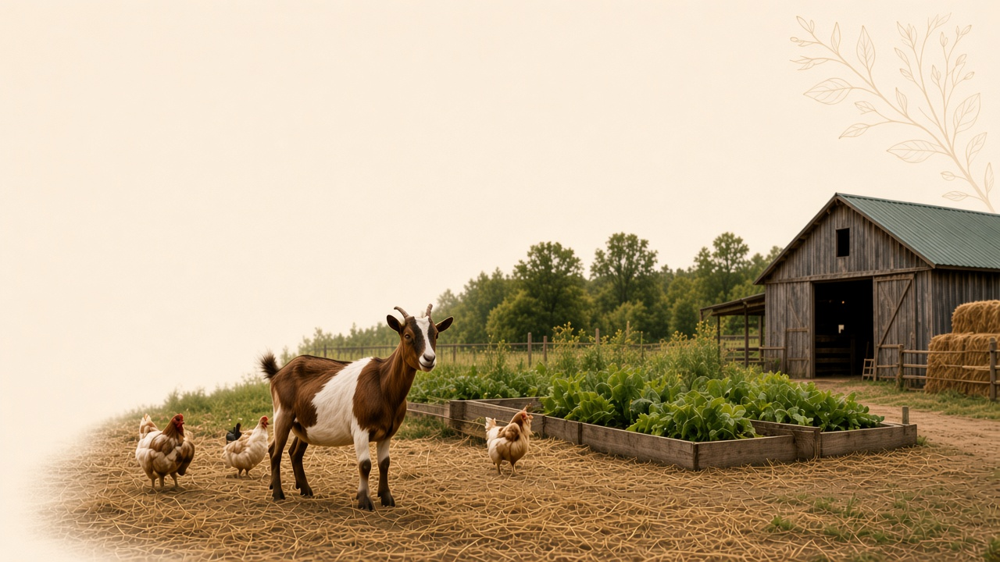

Agrivia Official
primer
First raised bed: soil, water, and what can wait
Ask the advisor about a first bed →♥ · Comment · Report
This is the layout I recommended: cream search first, farm photo with no text on it, then a centered Near-you feed with a guest ZIP. Official cards are Agrivia primers, not invented growers. Open this file to click around; it is not live agrivia.ai.
For homesteaders and new backyard growers
How-to guides and an on-site advisor for your backyard homestead

First raised bed: soil, water, and what can wait
Ask the advisor about a first bed →Layout of a real grower post after ZIP or location is known. Miles only show when we have a place.
Grower posts are not a vet diagnosis. Official primers are Agrivia. We do not invent neighbor names to fill the strip.
Compared with live agrivia.ai: copy is no longer sitting on the goat, the photo is its own band, Near you has a ZIP field, and a single post is a wide reading card instead of a 1/4-width tile.